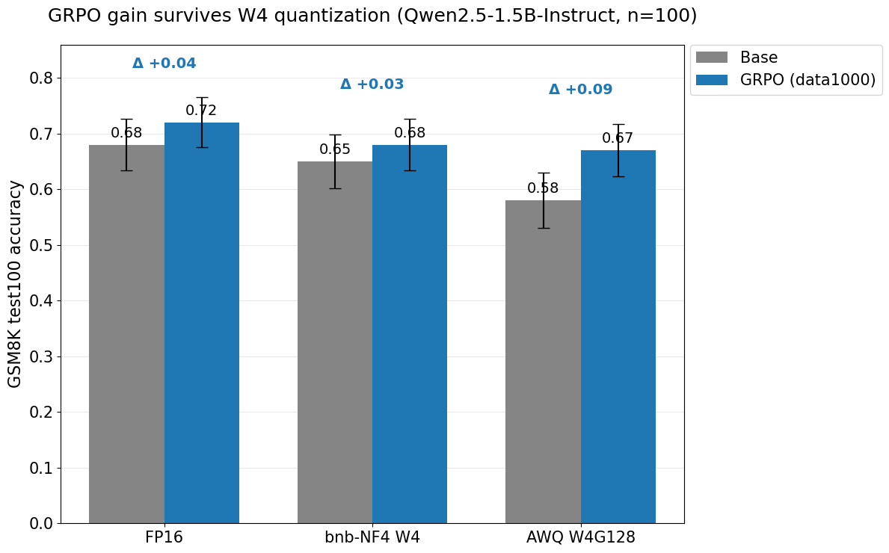

Does RL post-training change how a model quantizes?
Most people quantize a model and report the perplexity hit. I asked a different question: does reinforcement-learning post-training change how a model behaves once it's quantized — and do the RL gains survive 4 bits?
The question
RL post-training (here, GRPO) reshapes a model's output distribution; post-training quantization (AWQ at W4G128) perturbs its weights. The natural question is whether they interact: if you take an RL-tuned model and quantize it to 4-bit for serving, do the gains hold, or does quantization wash them out? For any inference or model-efficiency team this is a real concern — if RL gains don't survive quantization, the serving stack is shipping a quietly degraded model.
Scope, kept deliberately tight: single-GPU, Qwen2.5-1.5B-Instruct, GSM8K with verifiable rewards, AWQ W4G128, served with vLLM. This is not a distributed-training paper — the research question is the spine, not the infrastructure.
Setup, and the decisions that matter
I trained with GRPO using verifiable rewards — an answer-checking grader rather than a learned reward model — which gives a clean, cheap training signal. Two scope decisions did most of the work:
- Why 1.5B, not 0.5B. A 0.5B model has no redundancy to absorb 4-bit error, so at W4 it collapses to the floor regardless of training — which would confound the whole thesis. At 1.5B the base model stays functional at W4, so any base-vs-GRPO gap after quantization is attributable to the RL, not to the model being too small to quantize.
- Why single-GPU, no FSDP. At ~3 GB in bf16, 1.5B fits comfortably on one A40. Sharding it would be complexity with no benefit; FSDP is the right tool once you're at 7B+. Knowing when not to reach for a tool is part of the design.
Getting the RL dynamics right first
Early GRPO runs underperformed in a way that looked like a learning-rate problem but wasn't — the advantages were collapsing, so the policy had almost no signal to learn from. Fixing the advantage estimation and the sampling setup turned the run around. That work matters here for one reason: the quantization comparison is only meaningful if the FP16 GRPO model is a genuine improvement over the base. With the dynamics sorted, GRPO produced a real, if modest, held-out gain on GSM8K — which is the gain whose survival under 4-bit I set out to test.
Does the gain survive 4 bits?
The core experiment is a controlled comparison: {base, GRPO} × {FP16, NF4 W4, AWQ W4G128}, all evaluated on the same held-out GSM8K test set (n = 100).

On Qwen2.5-1.5B-Instruct, GRPO improved held-out GSM8K accuracy from 0.68 to 0.72 in FP16 (Δ +0.04). After 4-bit quantization, the GRPO model still beat the base model: 0.68 vs 0.65 under bitsandbytes NF4 (Δ +0.03), and 0.67 vs 0.58 under AWQ W4G128 (Δ +0.09). The effect is modest at n = 100, but the key observation is that the RL gain did not disappear under W4.
Put another way: the gain-survival under NF4 is essentially flat (−0.01 relative to the FP16 gap), and under AWQ it is slightly larger (+0.05). I read the AWQ result as suggestive candidate evidence rather than a locked conclusion — at this sample size I would not overclaim a quantization-scheme effect. The defensible statement is the narrow one: there is no evidence that this GRPO recipe makes Qwen2.5-1.5B harder to quantize, and good evidence that the held-out gain carries through W4.
Serving: a deployment sanity check
I also added a vLLM serving benchmark to close the deployment loop, and I want to report it honestly: AWQ preserved the accuracy-side GRPO result, but it did not improve throughput or latency for this small 1.5B model on one A40. The point of the serving code is to verify the checkpoint can actually be served and measured end-to-end — not to claim a speedup.
| Config (batch 64) | Throughput (tok/s) | p50 latency (s) | p95 latency (s) | Peak mem (GB) |
|---|---|---|---|---|
| Base FP16 | 5377.1 | 1.226 | 2.200 | 40.27 |
| GRPO FP16 | 5687.7 | 1.238 | 2.045 | 40.27 |
| Base AWQ W4G128 | 3052.6 | 2.307 | 2.953 | 40.23 |
| GRPO AWQ W4G128 | 3275.8 | 2.311 | 3.043 | 40.23 |
Under batch-64, FP16 reached roughly 5.4k–5.7k generated tokens/sec, while AWQ reached about 3.1k–3.3k tokens/sec — slower, not faster. Two honest caveats. First, vLLM batching clearly worked: throughput scaled strongly with batch size, which is the expected and reassuring behavior. Second, the peak-memory column is not a clean model-footprint comparison — vLLM reserves memory for KV-cache capacity, so the figures reflect served capacity rather than the quantized weight size. The honest conclusion is that quantization preserved accuracy here without buying a serving win; a latency or throughput advantage from W4 would show up on larger models or under tighter memory/concurrency regimes.
Limitations and what's next
This is a single benchmark family at n = 100, so the accuracy results are suggestive rather than statistically locked, and the AWQ gain-survival number in particular should be read as candidate evidence. On the systems side, the serving study measured throughput and end-to-end p50/p95 latency; per-token latency such as time-to-first-token is future work, as is a memory-constrained capacity sweep where W4 would be expected to help. The natural next pieces are a 7B run where sharding actually matters, and a three-engine comparison — vLLM vs SGLang vs TensorRT-LLM — on the same GRPO-then-quantized checkpoint.
Code and full results: github.com/JiamingPan/posttrain-quant-serve. Happy to talk about any of it — jiamingp@umich.edu.